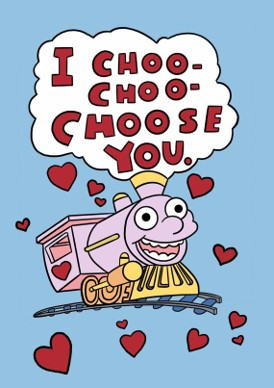

library("gt") #great tables
library("patchwork") #easy side-by-side plots
library("tidyverse") #tools for data wrangling and visualization
# school colors
princeton_orange <- "#E77500"
princeton_black <- "#121212"SML 201
Start
Goal: Introduce concepts of probability
Objective: Compute probabilities with the discrete binomial distribution
Brief History of Probability
Terminology
For event \(X\) with outcomes \(x\), the probability \(P(x)\) has properties
- each probability is between zero and one (inclusive inequalities)
\[0 \leq P(x) \leq 1\]
- all probabilities add up to one (i.e. 100 percent)
\[\sum_{x \in X} P(x) = 1\]
If a pair of parents have two children, should the genders of the children be represented as
{two girls, mixed, two boys}
OR
{{girl, girl}, {girl, boy}, {boy, girl}, {boy, boy}}
Classical probability: fraction from known observations
- example: With two children, the probability of having one girl and one boy is \(\frac{2}{4}\)
Frequentist probability: If we could repeat an experiment infinitely many iterations, what would the proportion be?
- example: Surveying all families with multiple children, among the first two children, the probability of having one girl and one boy is converging toward 50 percent.
- SML 201
Bayesian probability: A posterior distribution is the update from multiplying likelihoods to the prior distribution.
- example: If the first child is a girl, what is the probability that the second child is a boy?
- SML 320
Coins
For a flip of a fair coin, the probability of observing “Heads” is 50 percent. The complement, observing “Tails”, also has a probability of 50 percent.
\[P(H) = 0.50, \quad P(T) = 0.50\] 
c("HHH", "THH", "HTH", "TTH", "HHT", "THT", "HTT", "TTT")c("HHHH", "THHH", "HTHH", "TTHH", "HHTH", "THTH", "HTTH", "TTTH",
"HHHT", "THHT", "HTHT", "TTHT", "HHTT", "THTT", "HTTT", "TTTT"
)c("HHHHH", "THHHH", "HTHHH", "TTHHH", "HHTHH", "THTHH", "HTTHH",
"TTTHH", "HHHTH", "THHTH", "HTHTH", "TTHTH", "HHTTH", "THTTH",
"HTTTH", "TTTTH", "HHHHT", "THHHT", "HTHHT", "TTHHT", "HHTHT",
"THTHT", "HTTHT", "TTTHT", "HHHTT", "THHTT", "HTHTT", "TTHTT",
"HHTTT", "THTTT", "HTTTT", "TTTTT")# 3 coins
coin <- c("H", "T")
df <- data.frame(expand.grid(coin, coin, coin)) |>
tidyr::unite("obs", c("Var1", "Var2", "Var3"),
sep = "", remove = FALSE)
dput(df$obs)
# 4 coins
df <- data.frame(expand.grid(coin, coin, coin, coin)) |>
tidyr::unite("obs", c("Var1", "Var2", "Var3", "Var4"),
sep = "", remove = FALSE)
dput(df$obs)
# 5 coins
df <- data.frame(expand.grid(coin, coin, coin, coin, coin)) |>
tidyr::unite("obs", c("Var1", "Var2", "Var3", "Var4", "Var5"),
sep = "", remove = FALSE)
dput(df$obs)Example: For 6 coin flips, in how many permutations do we observe exactly 2 heads?
one instance:
\[{H, H, T, T, T, T}\]
- answer:
\[\frac{6!}{2!4!} = 15\]
Choose
\[\binom{n}{k} = \frac{n!}{k!(n-k)!}\]
- said ``n choose k’’
- note \(0! = 1\) (to avoid dividing by zero)

In SML 201, you will never be directly asked for the distinction between
- permutations: number of arrangements when order matters
- combinations: number of arrangements when order does not matter
Example: To open a combination lock, you need to apply the correct permutation
But \(\binom{n}{k}\) is “nCr” on a calculator!
- This choose operator keeps track of the number of permutations in a certain combination
\[P(x = k) = \binom{n}{k} p^{k}(1-p)^{n-k}\]
- \(0 \leq k \leq n\), where \(n\) and \(k\) are whole numbers
- \(0 \leq p \leq 1\)
dbinom
Example: Squirtle
Historically, Squirtle defeats Charizard 32% of the time. If there are 5 battles, what is the probability that Squirtle wins exactly 2 times?

c("SSSSS", "CSSSS", "SCSSS", "CCSSS", "SSCSS", "CSCSS", "SCCSS",
"CCCSS", "SSSCS", "CSSCS", "SCSCS", "CCSCS", "SSCCS", "CSCCS",
"SCCCS", "CCCCS", "SSSSC", "CSSSC", "SCSSC", "CCSSC", "SSCSC",
"CSCSC", "SCCSC", "CCCSC", "SSSCC", "CSSCC", "SCSCC", "CCSCC",
"SSCCC", "CSCCC", "SCCCC", "CCCCC")- But these observations have different weights!
- The outcomes are not uniformly distributed
\[P(k = 2) = \overbrace{\binom{5}{2}}^{\text{number of permutations}}\underbrace{(0.32)^{2}}_{\text{Squirtle wins}}\overbrace{(0.68)^{3}}^{\text{Charizard wins}}\]
Historically, Squirtle defeats Charizard 32% of the time. If there are 5 battles, what is the probability that Squirtle wins exactly 2 times?
- \(n = 5\)
- \(k = 2\)
- \(p = 0.32\)
dbinom(2, 5, 0.32)[1] 0.3219784k_obs <- 2
n <- 5
p <- 0.32
labels <- TRUE
# make data frame
k_vals <- 0:n
pk <- dbinom(k_vals, n, p)
k_bool <- k_vals %in% k_obs
df_binom <- data.frame(k_vals, pk, k_bool)
# compute requested probability
answer_prob = round(sum(dbinom(k_obs, n, p)), 4)
# define bar plot
this_plot <- if(labels){
df_binom |>
ggplot(aes(x = factor(k_vals), y = pk, color = k_bool, fill = k_bool)) +
geom_bar(stat = "identity") +
geom_label(aes(x = factor(k_vals), y = pk, label = round(pk, 4)),
color = "black", fill = "white") +
labs(subtitle = paste0("n = ", n, ", k = ", list(k_obs), ", p = ", p, ", P(k = ", list(k_obs), ") = ", answer_prob),
caption = "SML 201",
y = "probability") +
theme(
legend.position = "bottom",
panel.background = element_blank()
)
} else{
df_binom |>
ggplot(aes(x = factor(k_vals), y = pk, color = k_bool, fill = k_bool)) +
geom_bar(stat = "identity") +
labs(subtitle = paste0("n = ", n, ", k = ", list(k_obs), ", p = ", p, ", P(k = ", list(k_obs), ") = ", answer_prob),
caption = "SML 201",
y = "probability") +
theme(
legend.position = "bottom",
panel.background = element_blank()
)
}
# plot bar chart
this_plot +
# particular to this example
scale_color_manual(values = c("black", "#ca7721")) +
scale_fill_manual(values = c("gray70", "#297383")) +
labs(title = "Squirtle Wins",
x = "wins", y = "probability")Example: Charizard
Historically, Charizard defeats Squirtle 68% of the time. If there are 5 battles, what is the probability that Charizard wins exactly 3 times?
\[P(k = 3) = \overbrace{\binom{5}{3}}^{\text{number of permutations}}\underbrace{(0.68)^{3}}_{\text{Charizard wins}}\overbrace{(0.32)^{2}}^{\text{Squirtle wins}}\]
Historically, Charizard defeats Squirtle 68% of the time. If there are 5 battles, what is the probability that Charizard wins exactly 3 times?
- \(n = 5\)
- \(k = 3\)
- \(p = 0.68\)
dbinom(3, 5, 0.68)[1] 0.3219784Let us make a user-defined function to help us visualize the binomial distribution in the future.
vbinom <- function(k_obs, n, p, labels = TRUE){
# make data frame
k_vals <- 0:n
pk <- dbinom(k_vals, n, p)
k_bool <- k_vals %in% k_obs
df_binom <- data.frame(k_vals, pk, k_bool)
# compute requested probability
answer_prob = round(sum(dbinom(k_obs, n, p)), 4)
# define bar plot
this_plot <- if(labels){
df_binom |>
ggplot(aes(x = factor(k_vals), y = pk, color = k_bool, fill = k_bool)) +
geom_bar(stat = "identity") +
geom_label(aes(x = factor(k_vals), y = pk, label = round(pk, 4)),
color = "black", fill = "white") +
labs(subtitle = paste0("n = ", n, ", k = ", list(k_obs), ", p = ", p, ", P(k = ", list(k_obs), ") = ", answer_prob),
caption = "SML 201",
y = "probability") +
theme(
legend.position = "bottom",
panel.background = element_blank()
)
} else{
df_binom |>
ggplot(aes(x = factor(k_vals), y = pk, color = k_bool, fill = k_bool)) +
geom_bar(stat = "identity") +
labs(subtitle = paste0("n = ", n, ", k = ", list(k_obs), ", p = ", p, ", P(k = ", list(k_obs), ") = ", answer_prob),
caption = "SML 201",
y = "probability") +
theme(
legend.position = "bottom",
panel.background = element_blank()
)
}
# plot bar chart
this_plot
}vbinom(3, 5, 0.68) +
# particular to this example
scale_color_manual(values = c("black", "#297383")) +
scale_fill_manual(values = c("gray70", "#ca7721")) +
labs(title = "Charizard Wins",
x = "wins", y = "probability")Symmetry
In the previous examples, we saw that
\[\begin{array}{rcl} \binom{5}{2}(0.32)^{2}(0.68)^{3} & = & \binom{5}{3}(0.68)^{3}(0.32)^{2} \\ \binom{5}{2} & = & \binom{5}{3} \\ 10 & = & 10 \\ \end{array}\]
Claim:
\[\binom{n}{k} = \binom{n}{n-k}\]
Proof:
\[\binom{n}{n-k} = \frac{n!}{(n-k)!(n - (n-k))!} = \frac{n!}{(n-k)!k!} = \frac{n!}{k!(n-k)!} = \binom{n}{k}\]

- Images credit: Go Figure Math
For the binomial distribution
\[P(x = k) = \binom{n}{k} p^{k}(1-p)^{n-k}\]
- \(n\) trials
- observing \(k\) of that event
- population proportion \(p\)
- complement probability \(1-p\)
In a binomial setup (e.g. {success, failure}), it does not matter which label is associated with \(p\) and \(k\) as long as the rest of the task is presented consistently.
Squirtle wins:
- \(k = 2\)
- \(p = 0.32\)
- \(1 - p = 0.68\)
Charizard wins:
- \(k = 3\)
- \(p = 0.68\)
- \(1 - p = 0.32\)
Skew
In probability, the skew of a distribution is the measurement of how asymmetric the distribution is. Loosely speaking, graphs of distributions are described by which tail—left or right—is more stretched away from the mode.
p1 <- vbinom(2,5,0.32, labels = FALSE) + labs(title = "Right Skew")
p2 <- vbinom(3,5,0.68, labels = FALSE) + labs(title = "Left Skew")
# patchwork
p1 + p2An old definition of skewness was
\[(\mu - \nu) / \sigma\]
- \(\mu\): mean
- \(\nu\): median
- \(\sigma\): standard deviation
with then
- right skew: mean > median
- left skew: mean < median
However this definition has been debunked in the past couple of decades
- We tend to discuss distribution skew in a subjective way rather than rigorous way.
pbinom
Example: Boba
There are 4 parking spaces in front of the boba place. Suppose that each parking space tends to be occupied about 57 percent of the time.
There are 4 parking spaces in front of the boba place. Suppose that each parking space tends to be occupied about 57 percent of the time. What is the probability that exactly 3 of the parking spaces are open?
dbinom(3, 4, 0.43)[1] 0.181276vbinom(3, 4, 0.43) +
labs(title = "Exactly 3 parking spaces",
x = "open parking spaces")There are 4 parking spaces in front of the boba place. Suppose that each parking space tends to be occupied about 57 percent of the time. What is the probability that at most 2 of the parking spaces are open?
sum(dbinom(0:2, 4, 0.43))[1] 0.784536vbinom(0:2, 4, 0.43) +
labs(title = "Probability of at most 2 open parking spaces",
x = "open parking spaces")pbinom(2, 4, 0.43) #same as sum(dbinom(0:2, 4, 0.43))[1] 0.784536Cumulative Probability
The pbinom function in R computes a cumulative probability (i.e. adds up probabilities).
\[P(i \leq k) = \sum_{i = 1}^{k}\binom{n}{i}p^{i}(1-p)^{n-i}\]
In R,
pbinom(k, n, p)
# is the same as
sum(dbinom(0:k, n, p))Example: Parking
There are 32 parking spaces on a certain stretch of Nassau Street. Suppose that each parking space tends to be occupied about 81 percent of the time.
There are 32 parking spaces on a certain stretch of Nassau Street. Suppose that each parking space tends to be occupied about 81 percent of the time. What is the probability that more than 5 of the parking spaces are open?
vbinom(6:32, 32, 0.19, labels = FALSE) +
labs(title = "Probability of more than 5 open parking spaces",
x = "open parking spaces")Each of the following are equivalent ways to compute the requested probability (“more than 5”))
sum(dbinom(6:32, 32, 0.19))[1] 0.58535781 - pbinom(5, 32, 0.19)[1] 0.5853578pbinom(5, 32, 0.19, lower.tail = FALSE)[1] 0.5853578Brief History of Randomization
Venetian Elections
left: “Sorting process for the election of the Doge of Venice”, Jacob von Sandrart, 1687
- image credit: The Ballot Boy
right: elementary balls-and-urns probability setup
- image credit: Professor Joyce, Clark University
Discrete
In R, discrete sampling is handled with sample.
sample(LETTERS[1:6], size = 5)[1] "E" "F" "D" "A" "C"Asking for too many observations here leads to an error.
#sample(LETTERS[1:6], size = 7)Be default, the sampling is performed without replacement. Sometimes we will need to perform sampling with replacement.
sample(LETTERS[1:6], size = 7, replace = TRUE)[1] "D" "C" "D" "C" "B" "F" "C"Sometimes, we want to suppress randomization. More precisely, we want to replicate the creation of the pseudo-random numbers. This is useful for working on simulations with groups of researchers (i.e. get the same answers).
set.seed(201)
sample(LETTERS[1:6], size = 7, replace = TRUE)[1] "C" "F" "B" "A" "E" "F" "E"Continuous
The most common function for pseudo-random number generation in R is runif
- pronounced “r unif” (i.e. random numbers from a uniform distribution)
- default: random numbers between zero and one
runif(5)[1] 0.09931186 0.28766776 0.47009467 0.67783012 0.60524130
(optional) Math: Discrete versus Continuous
In math classes, we tend to have the students pick up simplistic definitions:
discrete data: can be written as a list
- math: “countable”
continous data: function can be drawn without lifting your pencil
- math: “uncountable”
If anyone is curious, here are more rigorous definitions from Real Analysis
- A set \(X\) is discrete if \(\exists \epsilon\in\mathbb{R}\) such that
\[\forall x\in X, \exists c \in B(x,\epsilon) \text{ such that } c \in \mathbb{R}/X\] where \(B\) is a ball of center \(x\) and radius \(\epsilon\).
- A set \(X\) is continuous if
\[\forall x \in X, \forall\epsilon \in \mathbb{R}, \exists c \in B(x,\epsilon) \text{ such that } c\in X\]
Not Uniform
The previous sampling examples were chosing from uniform distributions (i.e. each outcome was equally likely). We will have situations that are not uniform. For example
\[P(red) = 1/3, \quad P(green) = 2/3\]
sample(c("red", "green"), size = 20, replace = TRUE, prob = c(1/3, 2/3)) [1] "green" "green" "green" "green" "green" "green" "green" "red" "green"
[10] "green" "green" "green" "red" "red" "green" "green" "green" "red"
[19] "green" "green"Weighted Mean
- sample mean
\[\bar{x} = \frac{1}{n}\sum_{i=1}^{n} x_{i}\]
- weighted mean
\[\bar{x} = \frac{\sum_{i=1}^{n} w_{i}*x_{i}}{\sum_{i=1}^{n} w_{i}}\]
This banana slicer is popular on Amazon. We will replicate the calculation for the average rating.
The average rating is not \[\frac{1 + 2 + 3 + 4 + 5}{5}\] but rather
stars <- 1:5
probs <- c(4, 4, 8, 13, 71)/100
# weighted mean
sum(probs * stars) / sum(probs)[1] 4.43Scenario: Taco versus Sandwich
The undergraduates at Princeton are choosing an official food item, and the two remaining candidates are “tacos” and “sandwiches”. Suppose also that with regards to prior events, some residential colleges are alloted more delegates than others.

- image credit: El Pollo Norteño
Voter Info
set.seed(201)
college <- c("Butler", "Forbes", "Mathey", "New College West", "Rockefeller", "Whitman", "Yeh College")
n <- length(college)
delegates <- sample(11:20, size = n, replace = FALSE)
taco_prop <- round(runif(n), 2)
# if you want to experiment with this example later, you can explicitly set the weights here
# college <- c("Butler", "Forbes", "Mathey", "New College West", "Rockefeller", "Whitman", "Yeh College")
# delegates <- c(13, 16, 17, 12, 11, 15, 18)
# taco_prop <- c(27, 10, 29, 57, 68, 61, 47) / 100
df_election <- data.frame(
college, delegates, taco_prop
)Complement
df_election <- df_election |>
mutate(sandwich_prop = 1 - taco_prop)Simulate One Election
set.seed(201)
df_election <- df_election |>
rowwise() |>
mutate(picks = sample(c("Taco", "Sandwich"),
size = 1,
prob = c(taco_prop, sandwich_prop)))Count Votes
In this example, the votes are tabulated as a weighted mean.
df_election <- df_election |>
mutate(picks_bool = ifelse(picks == "Taco", 1, 0))
taco_share <- sum(df_election$delegates * df_election$picks_bool) / sum(df_election$delegates)
print(taco_share)[1] 0.254902Classify Result
election_result <- case_when(
taco_share < 0.5 ~ "Sandwich Won",
taco_share > 0.5 ~ "Taco Won",
.default = "tie"
)
print(election_result)[1] "Sandwich Won"Simulation
So far, we have merely one observation. What if we wanted to address broader questions like
- How often would taco win in this scenario?
- What is the variance (or standard deviation) for the
taco_share?
for loops
A common programming tool is the for loop. We tend to use letters \(i\), \(j\), and \(k\) historically as counter variables.
N <- 7 #number of iterationsfor(i in 1:N){
print(i)
}[1] 1
[1] 2
[1] 3
[1] 4
[1] 5
[1] 6
[1] 7for(i in 1:N){
print(i^2)
}[1] 1
[1] 4
[1] 9
[1] 16
[1] 25
[1] 36
[1] 49for(i in 1:N){
print(LETTERS[1:i])
}[1] "A"
[1] "A" "B"
[1] "A" "B" "C"
[1] "A" "B" "C" "D"
[1] "A" "B" "C" "D" "E"
[1] "A" "B" "C" "D" "E" "F"
[1] "A" "B" "C" "D" "E" "F" "G"Election Simulation
N <- 1337 #number of simulations
# pre-allocate space for storing results
taco_share_vec <- rep(NA, N)
for(i in 1:N){
df_election <- df_election |>
rowwise() |>
mutate(picks = sample(c("Taco", "Sandwich"),
size = 1,
prob = c(taco_prop, sandwich_prop)))
df_election <- df_election |>
mutate(picks_bool = ifelse(picks == "Taco", 1, 0))
taco_share_vec[i] <- sum(df_election$delegates * df_election$picks_bool) / sum(df_election$delegates)
}
df_simulation <- data.frame(iter = 1:N, taco_share_vec)
On the computer processing of simulations
If your computer is older
- took a while to draw maps
- took a while to produce network visuals
you may reduce the number of iterations from 1337 to 201 (for example).
Visualize the Simulation
Now, taco_share_vec is itself a numerical variable, so we can visualize its distribution with a histogram.
df_simulation |>
ggplot(aes(x = taco_share_vec)) +
geom_histogram(bins = 20, color = princeton_black, fill = princeton_orange) +
geom_vline(xintercept = 0.5, color = "#2A668F",
linewidth = 3, linetype = 3) +
labs(title = "Taco versus Sandwich!",
subtitle = "Simulated delegation voting of the residential colleges",
caption = "SML 201",
x = "taco vote share") +
theme_minimal()
Simulation Statistics
To wrap up this example,
- “Taco” had this vote share on average:
mean(df_simulation$taco_share_vec)[1] 0.4101442To compute how often “Taco” would win probabilistically, we could
- count the iterations where
taco_share_vec > 0.50 - divide by the number of iterations
mean(df_simulation$taco_share_vec > 0.50)[1] 0.2984293Preview: the standard error is the standard deviation of a sampling distribution.
sd(df_simulation$taco_share_vec)[1] 0.1734641Project 2
Covid Tracking
Replicate studies of wastewater surveillance and tracking coronaviruses
- concepts: data wrangling and linear regression
- areas: public health, geostatistics
- image source: California Department of Public Health
- inspired by work by Dr Davida Smith, Professor of Biology at TAMUSA
Quo Vadimus?
- Precept 6
- Group Cover Page
- Project 2 (due Oct 30)
- Exam 2 (December 5)
Exam 1 Statistics
- 134 students
- out of 60 points
- mean: 54.23 (90.38%)
- median: 55
- standard deviation: 4.97
Footnotes
(optional) Additional Resources
Session Info
sessionInfo()R version 4.4.1 (2024-06-14 ucrt)
Platform: x86_64-w64-mingw32/x64
Running under: Windows 10 x64 (build 19045)
Matrix products: default
locale:
[1] LC_COLLATE=English_United States.utf8
[2] LC_CTYPE=English_United States.utf8
[3] LC_MONETARY=English_United States.utf8
[4] LC_NUMERIC=C
[5] LC_TIME=English_United States.utf8
time zone: America/New_York
tzcode source: internal
attached base packages:
[1] stats graphics grDevices utils datasets methods base
other attached packages:
[1] lubridate_1.9.3 forcats_1.0.0 stringr_1.5.1 dplyr_1.1.4
[5] purrr_1.0.2 readr_2.1.5 tidyr_1.3.1 tibble_3.2.1
[9] ggplot2_3.5.1 tidyverse_2.0.0 patchwork_1.3.0 gt_0.11.1
loaded via a namespace (and not attached):
[1] gtable_0.3.5 jsonlite_1.8.8 compiler_4.4.1 tidyselect_1.2.1
[5] xml2_1.3.6 scales_1.3.0 yaml_2.3.8 fastmap_1.2.0
[9] R6_2.5.1 labeling_0.4.3 generics_0.1.3 knitr_1.48
[13] htmlwidgets_1.6.4 munsell_0.5.1 pillar_1.9.0 tzdb_0.4.0
[17] rlang_1.1.4 utf8_1.2.4 stringi_1.8.4 xfun_0.48
[21] timechange_0.3.0 cli_3.6.2 withr_3.0.1 magrittr_2.0.3
[25] digest_0.6.35 grid_4.4.1 rstudioapi_0.17.0 hms_1.1.3
[29] lifecycle_1.0.4 vctrs_0.6.5 evaluate_1.0.1 glue_1.7.0
[33] farver_2.1.2 fansi_1.0.6 colorspace_2.1-1 rmarkdown_2.28
[37] tools_4.4.1 pkgconfig_2.0.3 htmltools_0.5.8.1
Example Callout Block
note, tip, warning, caution, or important